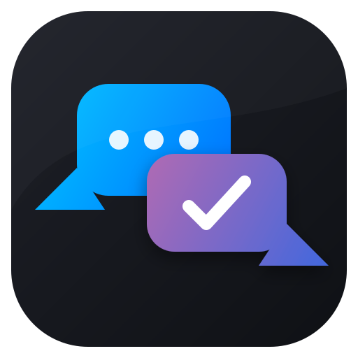

Единый центр для Telegram + ВКонтакте · CRM · Заметки
tg://proxy?server=…&port=…&secret=… и оттуда скопируйте host, port, secret.
Поддерживаются MTProxy и SOCKS5.
| App title | OmniDesk |
| Short name | omnidesk |
| URL | https://omnidesk.local (любая ссылка, не важно) |
| Platform | выберите Desktop |
| Description | можно оставить пустым |
12345678) → скопируйте в поле API ID нижеКод подтверждения отправлен в Telegram-чат «Telegram».
Включена двухфакторная аутентификация. Введите облачный пароль:
https://oauth.vk.com/blank.html#access_token=vk1.a.XXXXXXXX...&expires_in=0&user_id=12345
access_token= и &expires_in. Она начинается с vk1.a..
⚠️ Никому не показывайте токен — он даёт полный доступ к вашим сообщениям. OmniDesk хранит его зашифрованным локально на вашем ПК.